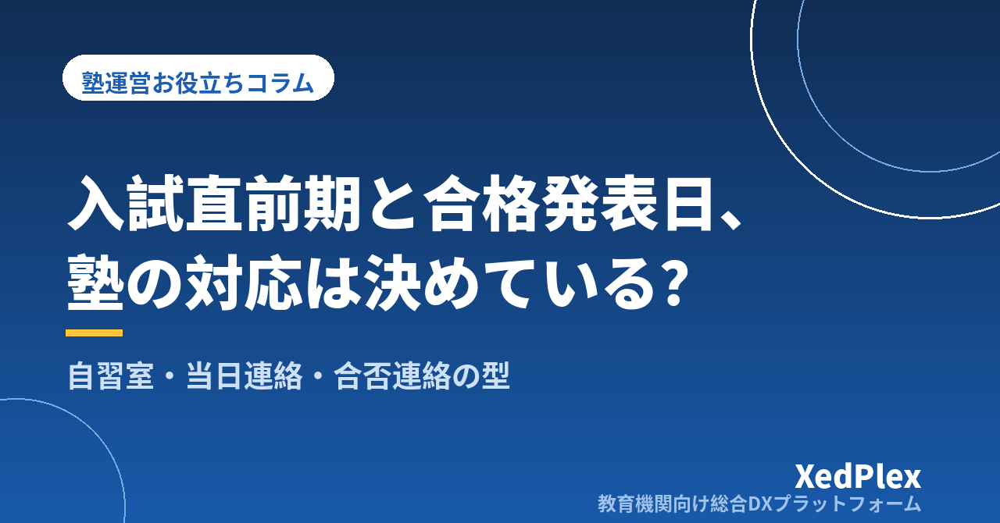

塾の入試直前期の運営と合否連絡の受け方｜授業・自習室の切り替え、入試当日の連絡、合格発表日の対応を型にする

年が明けると、受験生の時間割は毎週のように変わり、自習室は夜まで埋まり、「明日は入試なので休みます」「今日は体調が悪くて」と連絡が続く。合格発表の日は、朝からスマホが気になって授業に集中できない──。入試直前期は、受験生を抱える個人塾にとって一年でもっとも慌ただしい時期です。
直前期の大変さの多くは、指導そのものよりも、時間割・自習室・連絡・合否の受け止めをその場で判断していることから生まれます。この記事では、毎年くり返すこの時期を「型」にするために、直前期の前に決めておくこと、授業と自習室の切り替え方、入試当日と合格発表日の連絡の受け方、次年度につなげる記録の残し方を整理します。受験期の保護者との情報共有の全体像は「受験期の保護者との情報共有、塾はどう進める？」もあわせてご覧ください。
直前期に塾長が抱えやすい3つの混乱
- 時間割と在室が把握しきれない：入試日・学校行事・追加授業が生徒ごとに重なり、「今日は誰が来るのか」「誰が自習室に残っているのか」が塾長の頭の中にしかない状態になります。
- 連絡がばらばらに届く：欠席・体調・入試の手応え・合否が、電話、個人のメッセージ、口頭とさまざまな経路で届き、誰に何を聞いたかが分からなくなります。
- 合否への対応が場当たりになる：合格の報告には自然に応えられても、不合格の連絡を受けたときに何を言い、次の出願にどうつなぐかが決まっていないと、言葉に詰まったり、連絡が遅れたりします。
どれも、直前期が始まってから考えると追いつきません。11〜12月のうちに決めておくことが、いちばんの対策です。
直前期が始まる前に決めておく5つのこと
次の5つを1枚にまとめ、講師と共有しておきます。生徒・保護者に伝える部分は、冬期講習の案内や面談の場で一緒に渡すと手間が増えません。
| 項目 | 決めること | 例 |
|---|---|---|
| ①期間と時間割 | 直前期をいつからいつまでとし、通常授業をどう切り替えるか | 1月第2週から入試終了まで。通常授業は残し、追加の演習枠を設ける |
| ②自習室の開放 | 開放時間・受験生の優先・飲食や休憩のルール | 受験生は開校時間内いつでも利用可。21時以降は保護者の迎えを条件に |
| ③欠席・体調の連絡 | 連絡先と期限、体調不良時の扱い | 授業開始の○時間前までに塾の窓口へ。無理な来塾はさせない |
| ④入試当日の連絡 | 当日に塾へ連絡してほしいことと、しなくてよいこと | 連絡は任意。困ったことがあれば塾の窓口へ |
| ⑤合否連絡の受け方 | 誰が・いつ・どの経路で受けるか、結果を聞いたあとの流れ | 発表当日中に塾の窓口へ。塾長が折り返し、次の予定を確認する |
欠席や体調不良時の基本ルールは「塾で生徒が体調不良・けがをしたときの対応手順」、大雪など天候による休講判断は「台風・災害・感染症で休講するとき、塾はどう決める？」で整理しています。直前期は特に、決めた基準をそのまま使えるようにしておくと迷いません。
直前期の授業と自習室の切り替え方
授業は「新しいこと」から「確認と調整」へ
直前期の授業は、新しい単元を広げるより、過去問や演習で見つかった弱点の確認と、解く順番・時間配分の調整が中心になります。生徒ごとに「入試までに確認すること」を3つ程度に絞って書き出し、授業のたびに1つずつ消していくと、講師が替わっても指導の軸がぶれません。生徒ごとの計画の立て方は「塾の生徒別学習計画の立て方と続ける仕組み」が参考になります。
入試日から逆算した「生徒別の日程表」を1つにする
受験校・入試日・発表日・手続きの締め切りを、生徒ごとに1行で並べた日程表を作り、塾内で1つだけを正とします。定期テスト対策で学校ごとの日程をまとめる考え方（「塾の定期テスト対策期間の運営」参照）と同じで、カレンダーに入試日と発表日を入れておけば、前日の声かけや発表日の連絡待ちを忘れずにすみます。日程は必ず各校の募集要項など一次情報で確認し、塾の日程表は「確認用の控え」として扱います。
自習室は「在室の把握」と「帰宅の安全」をセットに
直前期は自習室の利用が増え、帰宅時間も遅くなりがちです。入退室の記録を残し、保護者が子どもの在室と帰宅の時間を確認できるようにしておくと、塾長が一人ひとりに連絡しなくても安心を届けられます。利用ルールの決め方は「個人塾の自習室運営、ルールはどう決める？」、夜の帰宅の考え方は「塾の防犯対策、夜の帰宅と教室の安全をどう守る？」をご覧ください。
入試当日の連絡は「塾から求めすぎない」
入試当日に「終わったら連絡してね」と生徒全員に求めると、生徒にも保護者にも負担になり、塾長も一日中連絡を待つことになります。当日の連絡は任意とし、塾から伝えるのは次の2点に絞るのがおすすめです。
- 前日までの声かけ：持ち物や集合時間などは学校の案内に従うよう伝え、塾からは「いつも通りでいい」という短いメッセージを送ります。
- 困ったときの連絡先：「何かあれば塾の窓口へ」と伝えておきます。講師の個人の連絡先は使いません（「塾の保護者連絡、講師の個人LINE頼みは危険？」参照）。
試験後に来塾した生徒には、手応えを深掘りするより「次の試験までにやること」を一緒に1つ決めるほうが、気持ちの切り替えにつながります。
合否連絡の受け方と、結果別の対応
合格発表の日は、連絡の経路と受ける人を事前に伝えておくことが大切です。「発表当日中に、塾の連絡窓口へお知らせください。塾長から折り返します」と決めておけば、講師が個別に受けて伝え漏れが起きることを防げます。夜遅くや休日の連絡の扱いは「塾の保護者連絡、時間外の対応はどう決める？」の考え方で、発表日だけの例外を決めておくと安心です。
| 結果 | 塾の対応 | 次の一手 |
|---|---|---|
| 合格 | 当日中に本人・保護者へお祝いを伝える | 手続きの締め切りを日程表で確認。ほかの受験が残っていれば予定どおり準備 |
| 不合格（次の受験がある） | 結果を受け止める短い言葉を伝え、長い分析はしない | 次の入試日までの授業・自習の予定を、その日のうちに保護者と確認 |
| すべての受験が終了 | 結果にかかわらず、これまでの努力をねぎらう | 入学までの過ごし方や今後の通塾について、落ち着いた時期に面談を設定 |
「ご連絡いただきありがとうございます。○○さんがここまで積み重ねてきたことは、次の試験でも必ず力になります。△日の入試に向けて、明日からの授業と自習の予定を一緒に確認させてください。ご都合のよい時間をお知らせいただけますか。」
受験がすべて終わったあとの継続の案内は、結果が出てすぐではなく、気持ちが落ち着いた時期に行います。中3生の場合は「中3生の受験後、高校生になっても塾を続けてもらうには？」で時期と伝え方を整理しています。また、合格実績をホームページやチラシに載せる場合は、本人・保護者の同意を得てからにし、氏名などの個人情報の扱いは「塾が守るべき生徒の個人情報管理の基本」の考え方に沿って判断してください。
記録を残して、次年度の直前期をラクにする
直前期の運営は、毎年ほぼ同じ時期に同じことをくり返します。入試がすべて終わったら、次の3つを短く残しておきましょう。
- 生徒ごとの記録：受験校・結果・直前期に取り組んだこと・本人の様子。面談や次の担当への引き継ぎに使えます（「塾の生徒記録（日誌）を残す習慣と活かし方」参照）。
- 運営の振り返り：自習室が足りなかった日、連絡が集中した日、講師が足りなかった枠など、困ったことを日付つきで書き出します。
- 来年の日程への反映：案内を出す時期、日程表を作る時期、面談を置く時期を年間の予定に書き込みます（「塾の年間事務カレンダーの作り方」参照）。
まとめ
入試直前期の慌ただしさは、期間と時間割・自習室・欠席と体調・入試当日の連絡・合否連絡の受け方の5つを先に決め、日程と記録と連絡を1か所に集めることで大きく減らせます。合格発表の日も、受ける人と次の一手が決まっていれば、どんな結果でも落ち着いて生徒と保護者に向き合えます。まずは今年の受験生の受験校と入試日・発表日を1枚の日程表に書き出すところから始めてみてください。
この記事を書いた運営より
私たちは、個人経営・小規模の学習塾向けに、生徒管理・QRコードでの入退室記録・月次請求・保護者へのLINE/メール通知・AIによる学習支援までをひとつにまとめた教育機関向け総合DXプラットフォーム「XedPlex（ゼドプレックス）」を開発・提供しています。初期費用は0円、料金は生徒1名あたり月額300円（税込）から。生徒50名の塾なら月15,000円（税込）です。全国8つの教室で導入されており、導入塾には紹介ホームページの無料作成も行っています。機能の詳細説明はこちら。
XedPlexの詳細を見る